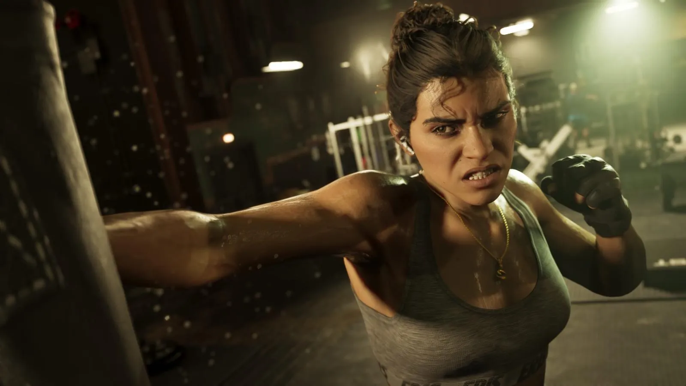
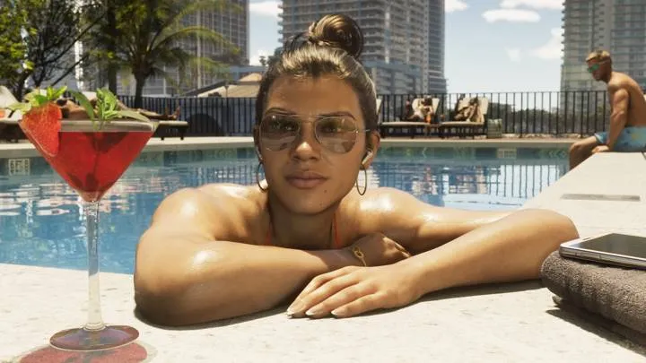
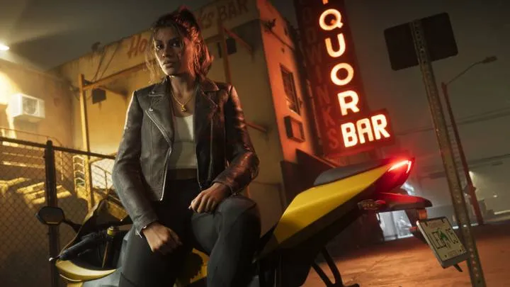
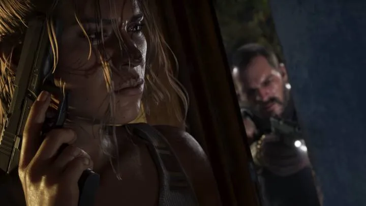
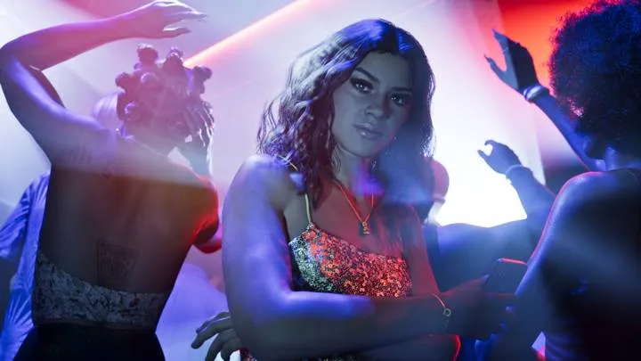
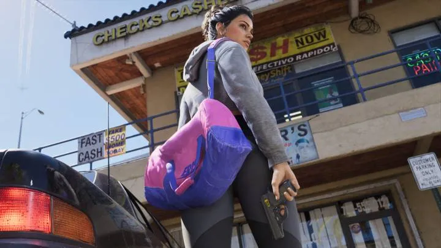

// Справочник · Персонажи
Лусия Каминос
Главная героиня · Обновлено:

Коротко
- Одна из двух главных героев GTA 6 — первая главная героиня в современных частях серии.
- Отец учил её драться, едва она начала ходить.
- Отсидела в исправительном учреждении Леониды.
- Хочет той жизни, о которой её мать мечтала ещё со времён Либерти-Сити.
Кто это
Лусия Каминос — первая полноценная главная героиня в современных частях GTA. Отец научил её драться, едва она начала ходить, и жизнь с тех пор не давала ей передышки: Лусия оказалась в исправительном учреждении штата Леонида.
Выйдя на свободу, она решила добиться хорошей жизни — той, о которой её мать мечтала ещё со времён Либерти-Сити.
Лусия и Джейсон — пара и напарники. Их отношения — центр сюжета GTA 6.
Галерея






Лусия Каминос и реальность

 vs
vsПо мотивамДжейсон и Лусия — Бонни и Клайд?Персонажи · Вся Леонида
 vs
vsПо мотивамЛусия и женские тюрьмы ФлоридыПерсонажи · Вся Леонида
Источник: Rockstar Games — официальный сайт GTA VI (rockstargames.com/VI). Изображения: Rockstar Games.
Короткие ролики: GTA 6 и реальная жизнь
Каждый день — одно сравнение: кадр игры рядом с реальным фото. Подписывайтесь:
YouTubeInstagramTikTok